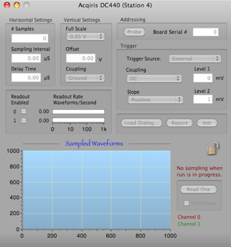

DGF4c Digitizer


The Acqiris DC440 digitizer cards is CompactPCI/PXI compliant and requires an appropriate CompactPCI crate. The digitizers are fully programmable over the PCI bus and deliver oscilloscope-like performance. Data captured by the digitizers can be transferred to a host processor at speeds up to 100 Mbytes/s.
Please refer to the manual for specifics.
The board address is the serial number that is on the board pull tab. You can get a list of all the serial numbers in the crate with the Probe button

Sampled waveforms will not be displayed during a run. Use the Data Monitor to view data when a run is in progress.
Trigger parameters are just like oscilloscope parameters.
Dialog parameters are loaded at the start of run or by clicking the Init Button. The Load Dialog reads the current values from hardware and loads them into this dialog.
Clicking Read One will read last triggered waveform from the card and display it in the plot to the left. If the Continuous option is selected, waveforms will continue to be readout at ~1Hz until manually stopped or a run is started.
Only enabled channels will be read out. The rate of readout will be displayed here also.
The Horizontal and Vertical settings parameters are just like oscilloscope parameters.
Data Format
The format of this card is very complex and is not documented here. Please refer to the programmers manual that came with the card for specifics.
Waveform Data Format
xxxx xxxx xxxx xxxx xxxx xxxx xxxx xxxx
^^^^ ^^^^ ^^^^ ^^------------------------data id
^^ ^^^^ ^^^^ ^^^^ ^^^^--length in longs
xxxx xxxx xxxx xxxx xxxx xxxx xxxx xxxx
^ ^^^----------------------------crate
^ ^^^^----------------------card
^^^^ ^^^^------------channel
xxxx xxxx xxxx xxxx xxxx xxxx xxxx xxxx --timeStamp Lo
xxxx xxxx xxxx xxxx xxxx xxxx xxxx xxxx --timeStamp Hi
xxxx xxxx xxxx xxxx xxxx xxxx xxxx xxxx --index offset To Valid Data
xxxx xxxx xxxx xxxx xxxx xxxx xxxx xxxx --number shorts in waveform
.. followed by n shorts and padded as
.. needed to the long word boundary
.. at the end of the record
.. note that the data as read off the hardware contains up
to 32 words that are not valid. The index offset lets
you know where to start.